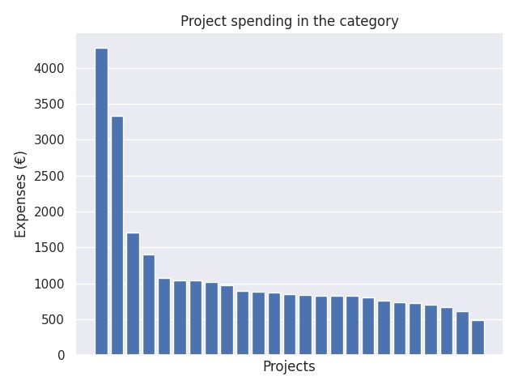

Valmistelevat vierailut ERASMUS + yleissivistävälle koulutukselle
Category summary
1.13K spent on average
4.28K highest spending

Reports in the category
Huutoniemen koulu
Project name: Colegio Salesiano Nuestra Señora Del Rosario
4.28K spent
Variskan koulu
Project name: Colegio Salesiano Nuestra Señora Del Rosario
3.33K spent
Vaalan lukio
Project name: Lycée la Versoie
1.71K spent
Tuiran koulu
Project name: Volkschule Julius-Meinl-Gassen
1.41K spent
Tornion kaupunki/Putaan koulu
Project name: Liceo Classico e Scientifico DEMOCRITO
1.08K spent
Rastaalan koulu
Project name: Colegio Apóstol Santiago
1.04K spent
Suonenjoen yhtenäiskoulu
Project name: COLEGIO SANTA TERESA (SANTA TERESA)
1.04K spent
Nilsiän lukio
Project name: Zespol Szkol Ponadgimnazjalnych w Krzeszowicach
1.02K spent
Kotimäen koulu
Project name: Özel Guney Gelisim Koleji
980 spent
Kyösti Kallion koulu
Project name: Istituto Comprensivo Statale 2° Frosinone
895 spent
Kyrönmaan lukio
Project name: Sint-Aloysiuscollege Diksmuide
886 spent
Mäntykankaan koulu
Project name: Escola la Benaula
872 spent
Ruskon kirkonkylän koulu
Project name: Escola Salvador Espriu
852 spent
Jyväskylän Lyseon lukio
Project name: Istituto di Istruzione secondaria superiore "R. Gorjux -N.Tridente- C.Vivante"
842 spent
Veräjäpellon koulu/ Espoon kaupunki
Project name: JCSP Demonstration Library Project CDETB Curriculum Development Unit
830 spent
Mäntynummen yhtenäiskoulu
Project name: Hermann-von-Helmholtz-Schule
828 spent
Tammerkosken lukio
Project name: Fundacion Educarte/Colegio Jesus y Maria
825 spent
Mäntysalon koulu
Project name: Ratsgymnasium Goslar
800 spent
Kivikon koulu
Project name: Szkoła Podstawowa nr 61 we Wrocławiu
760 spent
Äänekosken lukio
Project name: BC Broekhin Roermond
734 spent
Seinäjoen lukio
Project name: Rijnlands Lyceum Sassenheim
723 spent
Otalammen koulu
Project name: Fortes Lyceum
702 spent
Joensuun yhteiskoulun lukio
Project name: Facultas human gimnasium
668 spent
Kiviniityn koulu
Project name: Zespół Szkół Integracyjnych w Kłodzku
615 spent
Hansakallio
Project name: NLO, Niedersächsiche Landesinstitut für Qualitetssicherung (Lower Saxony State Department for Quality Development in Education)
488 spent